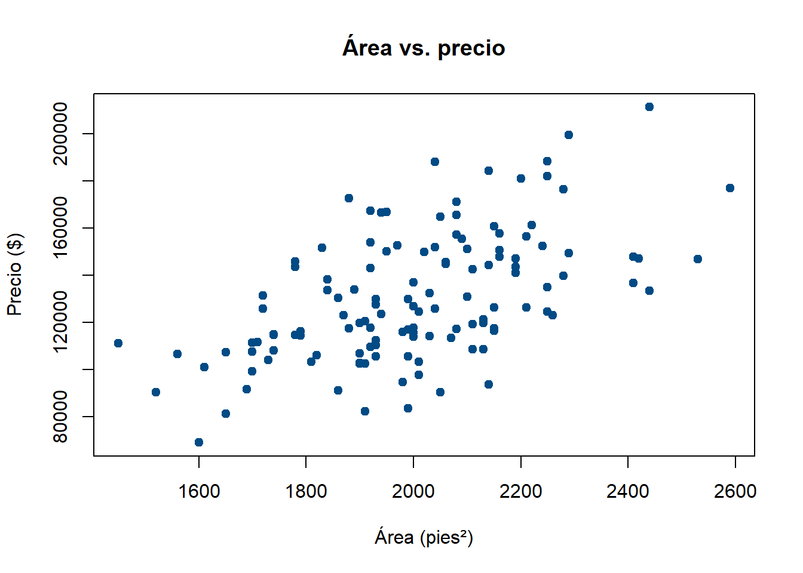
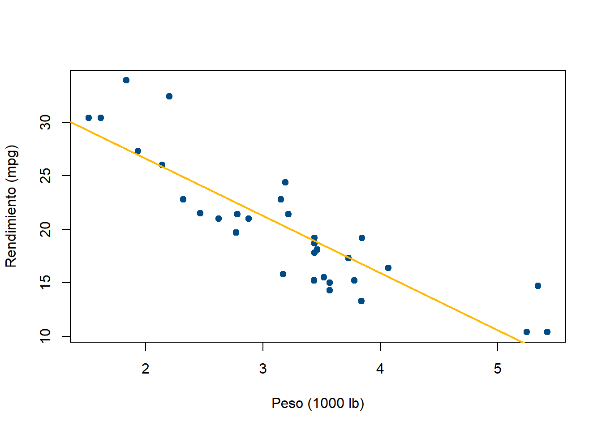
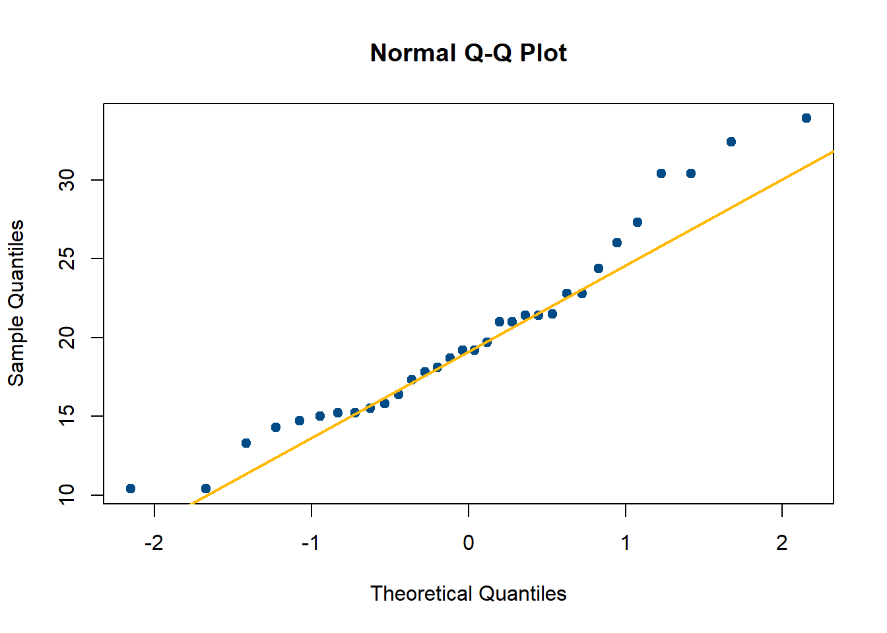

Code
houses <- read.csv("../data/house-prices.csv")
plot(houses$SqFt, houses$Price, pch = 19, col = "#004B85",
xlab = "Área (pies²)", ylab = "Precio ($)",
main = "Área vs. precio")
Hasta ahora hemos descrito una variable a la vez. Pero muchas preguntas reales son sobre la relación entre dos: ¿una casa más grande cuesta más? ¿Cuánto más, y con qué tan cerca ese patrón queda de ser una línea recta?
Antes de seguir: ¿esperas que el área (SqFt) y el precio de las 128 casas tengan relación positiva, negativa, o ninguna? ¿Qué tan “fuerte” crees que sería esa relación?

Mira el patrón: ¿los puntos suben o bajan de izquierda a derecha? ¿Qué tan “pegados” están a una posible línea recta imaginaria, comparado con qué tan dispersos están alrededor de ella?
¿Cómo convertirías esa impresión visual (“suben”, “bajan”, “están pegados”) en un número?
Para un conjunto de datos conjuntos \((x_1,y_1), \dots, (x_n,y_n)\):
\[cov(x,y) = \frac{1}{n}\sum_{i=1}^n (x_i - \bar{x})(y_i - \bar{y})\]
Cuando \(cov(x,y) > 0\), indica correlación lineal positiva (y crece cuando x crece); si es negativa, correlación lineal negativa; si es cercana a 0, ausencia de dependencia lineal (aunque podría existir una relación no lineal que la covarianza no detecta).
a) \(cov(x,x) = var(x)\) — inmediato de la definición, reemplazando \(y_i\) por \(x_i\).
b) Simetría: \(cov(x,y) = cov(y,x)\) — el orden de los factores no altera el producto.
c) Bajo escala: \(cov(ax, y) = a \cdot cov(x,y)\). \[cov(ax,y) = \frac{1}{n}\sum (ax_i - a\bar{x})(y_i-\bar{y}) = a\cdot\frac{1}{n}\sum(x_i-\bar{x})(y_i-\bar{y}) = a\cdot cov(x,y)\]
d) Bajo traslación: \(cov(x+c, y) = cov(x,y)\) — trasladar una variable no cambia su covarianza con otra, porque \(\overline{x+c} = \bar{x}+c\) cancela el término agregado.
e) Fórmula de cómputo: \[cov(x,y) = \frac{1}{n}\sum_{i=1}^n x_i y_i - \bar{x}\,\bar{y}\]
f) \(cov(x,c) = 0\) para cualquier constante \(c\) — una variable constante no covaría con nada.
\[\rho(x,y) = \frac{cov(x,y)}{\sqrt{var(x)\cdot var(y)}}\]
Es la covarianza “normalizada” para que no dependa de las unidades de medición — a diferencia de la covarianza, siempre toma valores en \([-1, 1]\).
Si \(y_i = ax_i + b\) (relación lineal exacta, \(a \ne 0\)), usando las propiedades de covarianza y varianza: \[\rho(x, ax+b) = \frac{cov(x, ax+b)}{\sqrt{var(x)\cdot var(ax+b)}} = \frac{a\cdot cov(x,x)}{\sqrt{var(x)}\cdot|a|\sqrt{var(x)}} = \frac{a\cdot var(x)}{|a|\cdot var(x)} = \frac{a}{|a|}\]
que vale \(+1\) si \(a>0\) y \(-1\) si \(a<0\) — exactamente lo que garantizan las propiedades 2 y 3.
Una correlación alta no implica causalidad. El ejemplo clásico: el número de premios Nobel por país y el consumo de chocolate per cápita están correlacionados, sin que exista una relación causal directa entre ambos.
Una vez que la correlación sugiere dependencia lineal, se puede ajustar la recta que mejor se adapta a los datos (por mínimos cuadrados):
\[y - \bar{y} = \frac{cov(x,y)}{var(x)}(x - \bar{x})\]
Esta recta siempre pasa por el punto \((\bar{x}, \bar{y})\). Dado un valor \(x_0\), se puede estimar \(y_0\):
\[y_0 = \bar{y} + \frac{cov(x,y)}{var(x)}(x_0 - \bar{x})\]
Estimar \(y_0\) para un \(x_0\) fuera del rango de los datos observados se llama extrapolación — y es peligroso: el patrón lineal que ajustaste solo está garantizado dentro de la ventana de tus datos. Fuera de ella, el modelo puede fallar por completo. Ver más trucos →
Paso 1 — Covarianza y correlación:
Paso 2 — Recta de regresión (visual):

Paso 3 — Estimar el precio de una casa de 2,200 pies² (dentro del rango observado):
[1] 144406.8La correlación entre área y precio debería salir positiva y moderada (cercana a 0.55) — confirma numéricamente lo que ya viste en el diagrama de dispersión: a mayor área, mayor precio, pero con una relación menos fuerte que la que verás en otros pares de variables. Tiene sentido: el precio de una casa depende de mucho más que su tamaño (barrio, número de baños, fachada de ladrillo, cuántas ofertas recibió) — el área explica parte de la variación en precio, no toda.
La gráfica Q-Q compara los cuantiles de dos conjuntos de datos para ver si provienen de distribuciones con características similares — o, comparada contra cuantiles teóricos, si un conjunto de datos se parece a una distribución conocida (como la normal):

Si los puntos siguen aproximadamente la línea diagonal, es evidencia de que los datos podrían modelarse razonablemente con una distribución normal — idea que se retomará formalmente en el módulo de probabilidad. Prueba repetir esta gráfica con houses$Price en vez de houses$SqFt: como el precio tiene asimetría notoria (Tema 7), deberías ver los puntos desviarse de la diagonal en el extremo superior — la gráfica Q-Q “delata” visualmente el sesgo que ya detectaste numéricamente.
Con el dataset real de energía renovable (data/BaseLaboratorio1.csv, Laboratorio integrador):
SolarEnergy y WindEnergy.HydroEnergy y TotalRenewableEnergy. ¿Por qué esperarías una correlación distinta en este caso?cor(x, y) — calcula directamente \(\rho(x,y)\).
---
title: "Tema 8 · Datos conjuntos: covarianza, correlación y regresión"
---
::: {.hero-motivacion}
## 🏠 ¿El área de una casa predice su precio?
Hasta ahora hemos descrito **una** variable a la vez. Pero muchas preguntas reales son sobre la relación entre dos: ¿una casa más grande cuesta más? ¿Cuánto más, y con qué tan cerca ese patrón queda de ser una línea recta?
:::
::: {.ficha-prediccion}
Antes de seguir: ¿esperas que el área (`SqFt`) y el precio de las 128 casas tengan relación positiva, negativa, o ninguna? ¿Qué tan "fuerte" crees que sería esa relación?
:::
## 🔬 Exploremos: el diagrama de dispersión
```{r}
#| label: fig-dispersión-sqft-price
#| fig-cap: "Área vs. precio en las 128 casas"
houses <- read.csv("../data/house-prices.csv")
plot(houses$SqFt, houses$Price, pch = 19, col = "#004B85",
xlab = "Área (pies²)", ylab = "Precio ($)",
main = "Área vs. precio")
```
::: {.ficha-resultado}
Mira el patrón: ¿los puntos suben o bajan de izquierda a derecha? ¿Qué tan "pegados" están a una posible línea recta imaginaria, comparado con qué tan dispersos están alrededor de ella?
:::
::: {.callout-tip}
## Pregunta guía
¿Cómo convertirías esa impresión visual ("suben", "bajan", "están pegados") en un número?
:::
## 📖 El aparato matemático: covarianza
::: {.panel-tabset}
## Definición
Para un conjunto de datos conjuntos $(x_1,y_1), \dots, (x_n,y_n)$:
$$cov(x,y) = \frac{1}{n}\sum_{i=1}^n (x_i - \bar{x})(y_i - \bar{y})$$
Cuando $cov(x,y) > 0$, indica correlación lineal positiva (y crece cuando x crece); si es negativa, correlación lineal negativa; si es cercana a 0, ausencia de dependencia lineal (aunque podría existir una relación no lineal que la covarianza no detecta).
## Propiedades (con demostración)
**a) $cov(x,x) = var(x)$** — inmediato de la definición, reemplazando $y_i$ por $x_i$.
**b) Simetría: $cov(x,y) = cov(y,x)$** — el orden de los factores no altera el producto.
**c) Bajo escala: $cov(ax, y) = a \cdot cov(x,y)$.**
$$cov(ax,y) = \frac{1}{n}\sum (ax_i - a\bar{x})(y_i-\bar{y}) = a\cdot\frac{1}{n}\sum(x_i-\bar{x})(y_i-\bar{y}) = a\cdot cov(x,y)$$
**d) Bajo traslación: $cov(x+c, y) = cov(x,y)$** — trasladar una variable no cambia su covarianza con otra, porque $\overline{x+c} = \bar{x}+c$ cancela el término agregado.
**e) Fórmula de cómputo:**
$$cov(x,y) = \frac{1}{n}\sum_{i=1}^n x_i y_i - \bar{x}\,\bar{y}$$
**f) $cov(x,c) = 0$** para cualquier constante $c$ — una variable constante no covaría con nada.
:::
## 📈 Coeficiente de correlación
::: {.panel-tabset}
## Definición
$$\rho(x,y) = \frac{cov(x,y)}{\sqrt{var(x)\cdot var(y)}}$$
Es la covarianza "normalizada" para que no dependa de las unidades de medición — a diferencia de la covarianza, siempre toma valores en $[-1, 1]$.
## Propiedades formales
1. **Acotación:** $-1 \le \rho(x,y) \le 1$ para cualesquiera observaciones.
2. **Correlación perfecta positiva:** $\rho(x,y) = 1$ si y solo si existen constantes $a>0, b$ tales que $y_i = ax_i + b$ para todo $i$.
3. **Correlación perfecta negativa:** $\rho(x,y) = -1$ si y solo si existen constantes $a<0, b$ tales que $y_i = ax_i + b$.
4. **Bajo transformaciones lineales:** $\rho(ax+b,\ cy+d) = \frac{a}{|a|}\cdot\frac{c}{|c|}\cdot \rho(x,y)$ — la correlación es invariante en magnitud ante cambios de escala y traslación; solo puede cambiar de signo.
## Demostración del caso extremo
Si $y_i = ax_i + b$ (relación lineal exacta, $a \ne 0$), usando las propiedades de covarianza y varianza:
$$\rho(x, ax+b) = \frac{cov(x, ax+b)}{\sqrt{var(x)\cdot var(ax+b)}} = \frac{a\cdot cov(x,x)}{\sqrt{var(x)}\cdot|a|\sqrt{var(x)}} = \frac{a\cdot var(x)}{|a|\cdot var(x)} = \frac{a}{|a|}$$
que vale $+1$ si $a>0$ y $-1$ si $a<0$ — exactamente lo que garantizan las propiedades 2 y 3.
:::
::: {.callout-important}
## Advertencia clásica (Rincón, 2017)
Una correlación alta **no implica causalidad**. El ejemplo clásico: el número de premios Nobel por país y el consumo de chocolate per cápita están correlacionados, sin que exista una relación causal directa entre ambos.
:::
## 📐 Recta de regresión
Una vez que la correlación sugiere dependencia lineal, se puede ajustar la recta que mejor se adapta a los datos (por mínimos cuadrados):
$$y - \bar{y} = \frac{cov(x,y)}{var(x)}(x - \bar{x})$$
Esta recta **siempre pasa por el punto $(\bar{x}, \bar{y})$**. Dado un valor $x_0$, se puede estimar $y_0$:
$$y_0 = \bar{y} + \frac{cov(x,y)}{var(x)}(x_0 - \bar{x})$$
::: {.callout-tip}
## 💡 Truco de interpretación
Estimar $y_0$ para un $x_0$ **fuera** del rango de los datos observados se llama **extrapolación** — y es peligroso: el patrón lineal que ajustaste solo está garantizado dentro de la ventana de tus datos. Fuera de ella, el modelo puede fallar por completo. [Ver más trucos →](../recursos.qmd)
:::
## 🧪 Ejemplo con datos reales
**Paso 1 — Covarianza y correlación:**
```{r}
cov(houses$SqFt, houses$Price)
cor(houses$SqFt, houses$Price)
```
**Paso 2 — Recta de regresión (visual):**
```{r}
plot(houses$SqFt, houses$Price, pch = 19, col = "#004B85",
xlab = "Área (pies²)", ylab = "Precio ($)")
abline(lm(Price ~ SqFt, data = houses), col = "#FFB903", lwd = 2)
```
**Paso 3 — Estimar el precio de una casa de 2,200 pies² (dentro del rango observado):**
```{r}
x_bar <- mean(houses$SqFt)
y_bar <- mean(houses$Price)
pendiente <- cov(houses$SqFt, houses$Price) / var(houses$SqFt)
x0 <- 2200
y0 <- y_bar + pendiente * (x0 - x_bar)
y0
```
::: {.callout-note}
## Lo que deberías notar
La correlación entre área y precio debería salir positiva y moderada (cercana a 0.55) — confirma numéricamente lo que ya viste en el diagrama de dispersión: a mayor área, mayor precio, pero con una relación menos fuerte que la que verás en otros pares de variables. Tiene sentido: el precio de una casa depende de mucho más que su tamaño (barrio, número de baños, fachada de ladrillo, cuántas ofertas recibió) — el área explica *parte* de la variación en precio, no toda.
:::
## 📊 Gráfica Q-Q (bono)
La gráfica Q-Q compara los cuantiles de dos conjuntos de datos para ver si provienen de distribuciones con características similares — o, comparada contra cuantiles teóricos, si un conjunto de datos se parece a una distribución conocida (como la normal):
```{r}
qqnorm(houses$SqFt, col = "#004B85", pch = 19)
qqline(houses$SqFt, col = "#FFB903", lwd = 2)
```
Si los puntos siguen aproximadamente la línea diagonal, es evidencia de que los datos podrían modelarse razonablemente con una distribución normal — idea que se retomará formalmente en el módulo de probabilidad. Prueba repetir esta gráfica con `houses$Price` en vez de `houses$SqFt`: como el precio tiene asimetría notoria (Tema 7), deberías ver los puntos desviarse de la diagonal en el extremo superior — la gráfica Q-Q "delata" visualmente el sesgo que ya detectaste numéricamente.
## 🧑🔬 Laboratorio
Con el dataset real de energía renovable (`data/BaseLaboratorio1.csv`, Laboratorio integrador):
1. Calcula la covarianza y la correlación entre `SolarEnergy` y `WindEnergy`.
2. Construye el diagrama de dispersión y agrega la recta de regresión.
3. ¿La correlación es fuerte o débil? ¿Tiene sentido, considerando que ambas son fuentes de energía distintas, no relacionadas físicamente entre sí?
4. Repite el análisis entre `HydroEnergy` y `TotalRenewableEnergy`. ¿Por qué esperarías una correlación distinta en este caso?
## ✅ Ejercicios autocorregibles
### Ejercicio 1 — Completa el código
```r
# Coeficiente de correlación: completa la función correcta
___(x, y)
```
<details>
<summary>Ver respuesta</summary>
`cor(x, y)` — calcula directamente $\rho(x,y)$.
</details>
### Ejercicio 2 — Verdadero o falso
<div class="card-lab" id="quiz-tema8">
<div style="margin-bottom: 1rem;"><strong>1. La correlación puede tomar valores mayores a 1.</strong><br>
<label><input type="radio" name="q1" value="V"> Verdadero</label> <label style="margin-left: 1rem;"><input type="radio" name="q1" value="F"> Falso</label></div>
<div style="margin-bottom: 1rem;"><strong>2. cov(x,x) = var(x).</strong><br>
<label><input type="radio" name="q2" value="V"> Verdadero</label> <label style="margin-left: 1rem;"><input type="radio" name="q2" value="F"> Falso</label></div>
<div style="margin-bottom: 1rem;"><strong>3. Una correlación alta implica causalidad.</strong><br>
<label><input type="radio" name="q3" value="V"> Verdadero</label> <label style="margin-left: 1rem;"><input type="radio" name="q3" value="F"> Falso</label></div>
<button class="btn-outline-prediccion" style="padding: 0.5rem 1rem; border-radius: 4px; cursor: pointer;" onclick="revisarQuizTema8()">Revisar respuestas</button>
<p id="resultado-quiz-tema8" style="margin-top: 1rem; font-weight: 700;"></p>
</div>
<script>
function revisarQuizTema8() {
const respuestas = { q1: "F", q2: "V", q3: "F" };
// Exigir que todas las preguntas estén respondidas antes de revelar el resultado
const sinResponder = Object.keys(respuestas).filter(
p => !document.querySelector(`input[name="${p}"]:checked`)
);
const resultadoEl = document.getElementById("resultado-quiz-tema8");
if (sinResponder.length > 0) {
resultadoEl.textContent = "Responde todas las preguntas antes de revisar.";
resultadoEl.style.color = "#B37D00";
return;
}
let correctas = 0;
for (const [p, c] of Object.entries(respuestas)) {
const s = document.querySelector(`input[name="${p}"]:checked`);
if (s && s.value === c) correctas++;
}
const r = document.getElementById("resultado-quiz-tema8");
r.textContent = `Obtuviste ${correctas} de ${Object.keys(respuestas).length} correctas.`;
r.style.color = correctas === Object.keys(respuestas).length ? "#004B85" : "#B37D00";
}
</script>
## 🗂️ Resumen
::: {.card-lab}
- La covarianza mide la dirección de la relación lineal entre dos variables; el coeficiente de correlación la normaliza a $[-1,1]$ para que sea comparable entre pares de variables distintas.
- $\rho = \pm 1$ ocurre única y exactamente cuando la relación es perfectamente lineal — esto se puede demostrar, no solo observar.
- La recta de regresión siempre pasa por $(\bar{x}, \bar{y})$ y permite estimar valores dentro del rango observado — nunca fuera de él (extrapolación).
- Correlación no es causalidad: una correlación alta es evidencia de asociación lineal, no de una relación causal.
:::